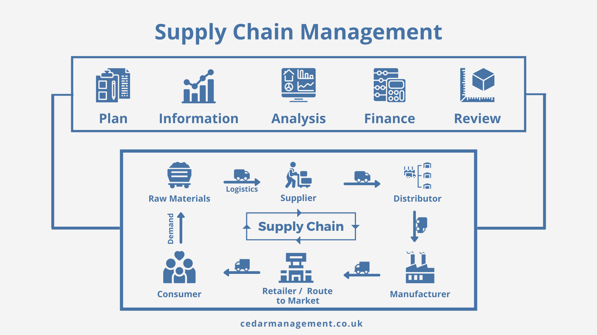

Вывод о SCM
Перспективы:
На протяжении многих лет клиент появлялся в цепочке поставок только на финальном этапе. Никто не задумывался, откуда продукт
взялся, из чего он изготовлен и каким образом попал в магазин. Сейчас все больше покупателей волнует прозрачность и
устойчивость цепочки поставок. Люди получили возможность выбирать, как и где покупать и какие возможности им необходимы во
время покупки. Чтобы компания развивалась и оставалась конкурентоспособной на рынке, современные решения SCM должны
собирать и интерпретировать все данные, сгенерированные на протяжении цепочки поставок. Максимально эффективно
использовать эти данные позволяют современные аналитические инструменты, обрабатывающие информацию в реальном времени.
Извлеченные сведения используются для гибкой, интеллектуальной автоматизации процессов SCM.
Вывод:
Таким образом, грамотно выстроенная SCM система управления позволяет быстрее доставлять товары, обеспечивать доступность
продуктов, сокращать проблемы с качеством и управлять возвратами. В конечном итоге она максимизирует ценность как внутри
организации, так и для клиентов, и создает для компании конкурентное преимущество на рынке.
Looks like CSS3 supports multiple background images; you specify